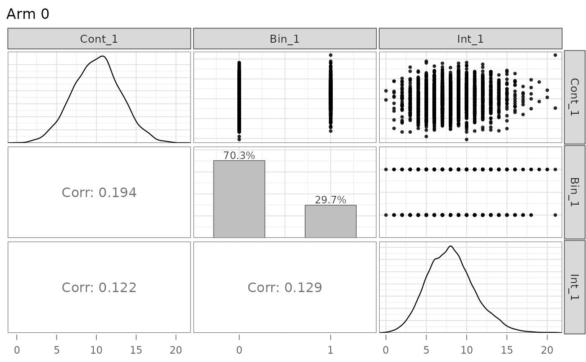
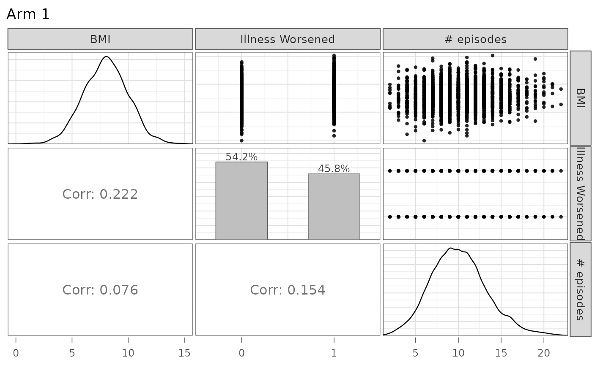

A User Guide for the `endpoints` Package
Colin Longhurst
2026-08-03
Source:vignettes/user_guide.Rmd
user_guide.RmdIntroduction
The makeData() framework is designed to simulate
flexible clinical trial datasets with a mix of endpoint types and
trial-design features, while keeping the interface simple and modular.
It supports both straightforward single-endpoint simulations and more
complex multivariate settings with correlated outcomes generated through
a Gaussian copula (NORTA-style) construction. The function also
accommodates:
- trials with multiple treatment arms
- time-to-event outcomes with censoring (competing or semi-competing risks)
- realistic trial logistics such as stochastic enrollment and administrative follow-up
In this vignette, we illustrate the package through a sequence of examples, beginning with simple single-endpoint simulations and gradually introducing more advanced features.
Quick Start: One Endpoint Simulations
The core function in endpoints is
makeData(), which is used across all simulation settings.
In the simplest case, makeData() can simulate a
single-endpoint trial with one or more treatment arms.
For one-endpoint simulations, the most important arguments are:
-
sample_size_per_group: Sample size per treatment arm (scalar or vector) -
endpoint_details: A list of endpoint specifications (one sub-list per endpoint)
An optional argument used in multivariate settings is:
-
correlation_matrix: A correlation matrix describing dependence across endpoints
This is discussed in later sections.
Specifying endpoints endpoint_details
The makeData() function allows for four endpoint types,
which are encoded via the endpoint_details argument:
continuous, binary, count and time-to-event. We discuss each below.
Continuous
An example specification of a continuous endpoint is seen below:
When generating continuous endpoints, makeData() uses a
Gaussian (normal) marginal distribution. The endpoint specification
arguments are:
-
baseline_mean: Mean in the control group. -
sd: If a scalar is provided, a common SD is used across groups. If a vector is provided, it specifies arm-specific SDs. -
trt_effect = NULL: Mean difference(s) for treatment group(s) relative to control. A scalar is used for one treatment arm; a vector may be used for multiple treatment arms. IfNULL, only control-group data are generated.
For a two-arm study, trt_effect = -2 implies
treatment mean = baseline_mean - 2
simple1 <- makeData(correlation_matrix = NULL,
sample_size_per_group = 1000,
SEED = 1,
endpoint_details = list(c_ep1)
)A quick summary of the simulation details is displayed when printing the resulting object:
simple1## <makeDataSim>
## n =2000
## n_arms =2
## endpoints =1
## target_correlation =FALSE
## single_endpoint_mode =TRUE
## control_only =FALSE
## n_by_arm = 0:1000, 1:1000
## endpoint_types = continuous
##
## data (head):
## Cont_1 trt
## 1 8.12063857862128 0
## 2 9.0212999043454 0
## 3 10.5509299725547 0
## 4 13.9893977783661 0
## 5 7.49311413608736 0
## ⋮ ⋮ ⋮To confirm the distributions have the correct parameters, we can use the summary function
| endpoint | arm | input_baseline_mean | input_sd | input_trt_effect | est_baseline_mean | est_trt_effect | est_resid_sd |
|---|---|---|---|---|---|---|---|
| Cont_1 | 0 | 10 | 3 | 0 | 10.02815 | 0.000000 | 2.999293 |
| Cont_1 | 1 | 10 | 2 | -2 | 10.02815 | -2.102053 | 2.066130 |
From above, we see that the estimated baseline mean, treatment effect and standard deviation parameter are all close to the true values.
The resulting simulated data set can be accessed from the main
makeDataSim object:
head(simple1$data)## Cont_1 trt
## 1 8.120639 0
## 2 9.021300 0
## 3 10.550930 0
## 4 13.989398 0
## 5 7.493114 0
## 6 13.817288 0The response variable is automatically encoded as Cont_1
to indicate that it is the first continuous endpoint.
Binary
For binary outcomes, the event probability is modeled on the logit
scale. You may specify treatment effects either directly on the
probability scale (trt_prob) or on the log-odds scale
(trt_effect), but not both.
bin_ep1 <- list(
endpoint_type = "binary",
baseline_prob = 0.30,
trt_prob = 0.45
)Binary endpoints are specified via the following arguments:
-
baseline_prob: Probability of success in the control group. -
trt_prob: Scalar or vector of treatment-group success probabilities. -
trt_effect = NULL: Optional scalar or vector of treatment effects on the log-odds scale (relative to control). Only one oftrt_probortrt_effectmay be supplied.
Once again we can confirm that the simulated data has the proper characteristics:
simple2 <- makeData(correlation_matrix = NULL,
sample_size_per_group = 1000,
SEED = 2,
endpoint_details = list(bin_ep1)
)
knitr::kable(summary(simple2)$binary)| endpoint | arm | input_baseline_prob | input_trt_logOR | input_trt_prob | est_baseline_prob | est_trt_logOR | est_prob |
|---|---|---|---|---|---|---|---|
| Bin_1 | 0 | 0.3 | 0.0000000 | 0.30 | 0.302 | 0.000000 | 0.302 |
| Bin_1 | 1 | 0.3 | 0.6466272 | 0.45 | 0.302 | 0.641161 | 0.451 |
Count
To generate count outcomes, we use the zero-inflated negative binomial distribution with a log-link function. The parameterization arguments are as follows:
int_ep1 <- list(
endpoint_type = "count",
baseline_mean = 8,
trt_count = 10,
size = 100, # approximate Poisson
p_zero = 0
)-
baseline_mean: Mean count in the control group. -
trt_count: Scalar or vector of treatment-group mean counts. -
trt_effect = NULL: Optional scalar or vector of treatment effects on the log rate-ratio scale. Only one oftrt_countortrt_effectmay be supplied. -
size: Negative binomial dispersion parameter (larger values reduce overdispersion and approach the Poisson limit). In the parameterization used, the variance of the distribution is equal to \(\mu + \frac{\mu^2}{\phi}\). Here,sizecontrols \(\phi\). -
p_zero: Zero-inflation probability.
An example use can be seen below:
simple3 <- makeData(correlation_matrix = NULL,
sample_size_per_group = 1000,
SEED = 2,
endpoint_details = list(int_ep1)
)
knitr::kable(summary(simple3)$count)| endpoint | arm | input_baseline_mean | input_trt_logRR | input_trt_mean | input_size | input_p_zero | est_baseline_mean | est_trt_logRR | est_size | obs_mean | obs_p0 |
|---|---|---|---|---|---|---|---|---|---|---|---|
| Int_1 | 0 | 8 | 0.0000000 | 8 | 100 | 0 | 7.987 | 0.0000000 | 54.55504 | 7.987 | 0 |
| Int_1 | 1 | 8 | 0.2231436 | 10 | 100 | 0 | 7.987 | 0.2321426 | 54.55504 | 10.074 | 0 |
Note: When size is large, the negative binomial
approaches a Poisson distribution. In those cases, the dispersion
parameter may be difficult to estimate precisely from a single simulated
dataset (e.g., via MASS::glm.nb()), which is usually not a
practical concern for simulation.
Time-to-Event Endpoints
Time-to-event endpoints are supported through exponential event-time
models with optional independent censoring, fatal/non-fatal event logic,
and the trial-calendar interface built from
enrollment_details, followup_details, and
trial_end_details. We return to these features later in
this vignette and in the dedicated enrollment_guide
vignette.
Multiple Treatment Arms
To extend the above simulations to settings with several treatment
groups, we can simply replace scalar inputs with vectors. In general, if
there are \(G\) total study arms
(including control), then treatment-specific vectors (e.g.,
trt_prob, trt_effect, sd) should
typically have length \(G-1\),
corresponding to the non-control arms in order.
For example, imagine we have a 4-grp study with a binary endpoint:
bin_4grp <- list(
endpoint_type = "binary",
baseline_prob = 0.30,
trt_prob = c(0.35, 0.40, 0.45)
)
sim_bin4grp <- makeData(correlation_matrix = NULL,
sample_size_per_group = c(100,200,400,400),
SEED = 123,
endpoint_details = list(bin_4grp)
)
sim_bin4grp## <makeDataSim>
## n =1100
## n_arms =4
## endpoints =1
## target_correlation =FALSE
## single_endpoint_mode =TRUE
## control_only =FALSE
## n_by_arm = 0:100, 1:200, 2:400, 3:400
## endpoint_types = binary
##
## data (head):
## Bin_1 trt
## 1 0 0
## 2 1 0
## 3 0 0
## 4 1 0
## 5 1 0
## ⋮ ⋮ ⋮Once again we can ensure the distributions are being simulated
correctly by calling summary:
| endpoint | arm | input_baseline_prob | input_trt_logOR | input_trt_prob | est_baseline_prob | est_trt_logOR | est_prob |
|---|---|---|---|---|---|---|---|
| Bin_1 | 0 | 0.3 | 0.0000000 | 0.30 | 0.29 | 0.0000000 | 0.290 |
| Bin_1 | 1 | 0.3 | 0.2282587 | 0.35 | 0.29 | 0.1871990 | 0.330 |
| Bin_1 | 2 | 0.3 | 0.4418328 | 0.40 | 0.29 | 0.4690414 | 0.395 |
| Bin_1 | 3 | 0.3 | 0.6466272 | 0.45 | 0.29 | 0.6744902 | 0.445 |
Correlated Endpoints with Gaussian Copula
Gaussian copulas provide a flexible way to generate multivariate outcomes with user-specified marginal distributions and dependence. Let \(\mathbf{Z} = (Z_1,\dots,Z_J)^\top \sim \mathrm{MVN}(\mathbf{0}, \Sigma_Z)\). Applying the probability integral transform componentwise gives
\[ X_j = F_j^{-1}\{\Phi(Z_j)\}, \qquad j=1,\dots,J, \]
where \(\Phi\) is the standard normal CDF and \(F_j^{-1}\) is the inverse CDF (quantile function) of the desired marginal distribution for endpoint \(j\). This construction preserves the chosen marginals and induces dependence across endpoints through the Gaussian copula.
Because Pearson correlation is generally not
preserved under nonlinear monotone transformations,
makeData() optionally uses numerical calibration
(target_correlation = TRUE) to find a latent Gaussian
correlation matrix that approximately reproduces the requested Pearson
correlation matrix on the observed endpoint scale.
Important: When
target_correlation = FALSE, the supplied
correlation_matrix is used directly as the latent Gaussian
correlation matrix (the copula parameter), not as a calibrated Pearson
correlation matrix on the observed endpoint scale. It is recommended
that this option is set to TRUE. See Cario & Nelson
(1997) for more details.
Creating the Correlation Matrix
To create a correlation matrix, we use the corr_make()
function which has two arguments:
-
num_endpoints: The number of correlated endpoints to generate -
values: Pairwise correlations specified as a 3-column object (e.g., matrix or data frame), where each row has the form(i, j, rho)giving the correlation between endpointsiandj. Unspecified pairs default to a correlation value of 0.
Consider a trial with 3 endpoints with the following correlation:
Simulating Correlated Endpoints
Using the endpoints defined above, we can now generate a trial with three correlated endpoints, one continuous, one binary and one count:
sim_3eps <- makeData(
correlation_matrix = corMat_3,
sample_size_per_group = 3000,
SEED = 777,
endpoint_details = list(
c_ep1,
bin_ep1,
int_ep1
)
)To quickly confirm that the estimated correlation between endpoints
is close to the correlation specified, we use the summary
function:
Show summary(sim_3eps)
n_arms: 2 Target correlation: [,1] [,2] [,3] [1,] 1.0 0.20 0.10 [2,] 0.2 1.00 0.15 [3,] 0.1 0.15 1.00 Estimated correlation (by arm): arm_0: Cont_1 Bin_1 Int_1 Cont_1 1.000 0.194 0.122 Bin_1 0.194 1.000 0.129 Int_1 0.122 0.129 1.000 arm_1: Cont_1 Bin_1 Int_1 Cont_1 1.000 0.222 0.076 Bin_1 0.222 1.000 0.154 Int_1 0.076 0.154 1.000 Continuous endpoints (endpoint x arm): endpoint arm input_baseline_mean input_sd input_trt_effect est_baseline_mean 1 Cont_1 0 10 3 0 10.05584 2 Cont_1 1 10 2 -2 10.05584 est_trt_effect est_resid_sd 1 0.000000 2.986202 2 -2.058158 1.993636 Binary endpoints (endpoint x arm): endpoint arm input_baseline_prob input_trt_logOR input_trt_prob 1 Bin_1 0 0.3 0.0000000 0.30 2 Bin_1 1 0.3 0.6466272 0.45 est_baseline_prob est_trt_logOR est_prob 1 0.297 0.0000000 0.2970000 2 0.297 0.6945707 0.4583333 Count endpoints (endpoint x arm): endpoint arm input_baseline_mean input_trt_logRR input_trt_mean input_size 1 Int_1 0 8 0.0000000 8 100 2 Int_1 1 8 0.2231436 10 100 input_p_zero est_baseline_mean est_trt_logRR est_size obs_mean obs_p0 1 0 8.070667 0.0000000 150.3706 8.070667 0.0006666667 2 0 8.070667 0.2223502 150.3706 10.080333 0.0000000000
From the summary above, we see that the within-arm correlation is
close to that specified in corMat_3 and that the marginal
distributions have the correct distributional characteristics. Note that
because the correlation calibration is numerical (and summaries are
based on finite samples), small discrepancies between the requested and
empirical within-arm correlations are expected.
Here we also introduce the plot function, which allows
users to quickly confirm simulation details:
plot(sim_3eps)
Note that different experimental arms can be plotted by toggling the
arm argument, and that names may also be supplied:

The code can easily be modified to accommodate several treatment groups by applying the conventions discussed in the previous section.
Time-to-event Endpoints and Censoring
In makeData(), all time-to-event (TTE) endpoints are
distributed as exponential random variables \(f(x;\lambda) = \lambda e^{-\lambda x}\).
They are encoded as elements in endpoint_details as
follows:
-
baseline_rate: The exponential event-rate parameter \(\lambda\) for the control group (so the mean event time is \(1/\lambda\)). -
trt_effect: Scalar or vector of treatment effects on the log hazard-ratio scale. -
censoring_rate = NULL: Exponential censoring-rate parameter for independent censoring (ifNULL, no random censoring is applied). -
fatal_event: IfTRUE, the endpoint is treated as fatal and censors subsequent non-fatal TTE endpoints. See below for details.
tte_ep1 <- list(
endpoint_type = "tte",
baseline_rate = 1/24,
trt_effect = log(0.80),
censoring_rate = NULL,
fatal_event = F
)Censoring
For a time-to-event endpoint, for the \(i^{th}\) patient we observe \(X_i = \min\{T_i, C_i\}\) where \(T \sim Exp(\lambda_e)\) is the event time and \(C_i \sim Exp(\lambda_c)\) is the censoring time. For the primary terminal event (or a non-terminal event when there are no terminal events), the probability of observing an event is \[P({T}_i < {C}_i) = \int^\infty_0\lambda_ee^{-\lambda_ex}e^{-\lambda_cx} = \frac{\lambda_{e}}{\lambda_e+\lambda_c},\]
which can be used to select a censoring rate that produces the
user-specified event rate. In the example from the code chunk above, if
we want to select a censoring rate such that we observe an event rate of
.9, some algebra yields \(\lambda_c =
\frac{1/24}{0.90} -\frac{1}{24} = 1/216\). This can be calculated
by using the helper function rate_from_prob():
lambda_c <- rate_from_prob(
target_prob = 0.90, # target proportion of patients with events
mode = "simple",
event_rate = 1 / 24 # rate parameter for primary event
)
print(paste0("1","/",1/lambda_c))## [1] "1/216"When there are semi-competing risks, and the TTE endpoints have low correlation, the event rate for the secondary, non-fatal TTE endpoint can be approximated as \(\frac{\lambda_{e2}}{\lambda_{e1}+\lambda_{c1}+\lambda_{e2}+\lambda_{c2}}\) where the subscripts \(1, 2\) denote the first and secondary endpoints. The above formula is meant only as an approximation as the dependence (induced by the copula) between \(X_1\) and \(X_2\) is not accounted for. This approximation can also be handled by the helper function. In this case, the output is the rate of the censoring mechanism for the secondary endpoint.
rate_from_prob(
target_prob = 0.20, # hypothetical example
mode = "semi-competing",
fatal_event_rate = 1 / 50,
fatal_censor_rate = 1 / 16.667,
nonfatal_event_rate = 1 / 35
)## [1] 0.03428691Please see ?rate_from_prob() for details.
We also note here that the censoring mechanism is independent of the copula so pairwise correlations involving censored TTE endpoints generally will not equal the specified coefficient. To confirm the simulation is working as intended, we recommend first simulating the data without censoring, confirming the correlation, then re-generating the data with censoring.
Fatal Events
Let \(X_1\) be a fatal event and \(X_2\) be a non-fatal event, then we write \(X_2 = \min\{T_1, C_1, T_2,C_2\}\). That is, we cannot observe any event that occurs after a fatal event occurs or is censored.
If a non-fatal event occurs before a fatal event (\(T_2 < \{T_1, C_1,C_2\}\)), a fatal event
can still be subsequently observed (or censored). If a non-fatal event
is censored before a fatal event (\(C_2 <
\{T_1, C_1,T_2\}\)), a fatal event can still be subsequently
observed (or censored), unless
non_fatal_censors_fatal = TRUE is toggled in the main
makeData() function. This is a global option for all TTEs
simulated.
Semi-Competing Risks Example
We want to generate a data set with TTE endpoints, one fatal and one non-fatal. The fatal event has an average time of 50 in the control group, and 60 in the treatment group. We want an observed event rate of .25 in the control group.
To solve for the needed log hazard ratio, we solve \(\frac{1}{60} = \frac{1}{50} \cdot HR \to \text{HR} = .833\). To solve for the censoring rate, we solve \(\frac{1/50}{0.25} - \frac{1}{50} = 1/ 16.667\).
For the second endpoint, we want a mean time of 35 for control group and 45 for treatment group, with an observed event rate of .45 for the control group. To solve for the needed log hazard ratio, we solve \(\frac{1}{45} = \frac{1}{35} \cdot HR \to \text{HR} = 0.778\). To solve for the censoring rate, we solve \(\frac{1/35}{0.45} - \frac{1}{35} = 1/ 28.64\).
We assume a correlation of .2 between the endpoints.
tte_fatal <- list(
endpoint_type = "tte",
baseline_rate = 1/50,
trt_effect = log(0.8333),
censoring_rate = 1/16.667,
fatal_event = TRUE
)
tte_nonfatal <- list(
endpoint_type = "tte",
baseline_rate = 1/35,
trt_effect = log(0.778),
censoring_rate = 1/28.64,
fatal_event = FALSE
)
small_cor <- corr_make(
num_endpoints = 2,
values = rbind( c(1,2, 0.20)) # correlation
)
tte_ex <- makeData(
correlation_matrix = small_cor,
sample_size_per_group = 5000,
SEED = 321,
endpoint_details = list( tte_fatal, tte_nonfatal),
non_fatal_censors_fatal = FALSE
)
tte_ex## <makeDataSim>
## n =10000
## n_arms =2
## endpoints =2
## target_correlation =TRUE
## single_endpoint_mode =FALSE
## control_only =FALSE
## n_by_arm = 0:5000, 1:5000
## endpoint_types = time-to-event, time-to-event
##
## data (head):
## TTE_1 TTE_2 trt Status_1 Status_2
## 1 1.04727950385236 1.04727950385236 0 0 0
## 2 1.08654899491183 1.08654899491183 0 0 0
## 3 28.7011752270296 10.1710911152606 0 0 1
## 4 7.0854601196209 1.40421959333994 0 0 1
## 5 0.743645541628904 0.743645541628904 0 0 0
## ⋮ ⋮ ⋮ ⋮ ⋮ ⋮And we can confirm our inputs:
Show summary(tte_ex)
n_arms: 2 Target correlation: [,1] [,2] [1,] 1.0 0.2 [2,] 0.2 1.0 Estimated correlation (by arm): arm_0: TTE_1 TTE_2 TTE_1 1.000 0.568 TTE_2 0.568 1.000 arm_1: TTE_1 TTE_2 TTE_1 1.000 0.621 TTE_2 0.621 1.000 TTE endpoints (endpoint x arm): endpoint arm censor_col input_baseline_rate input_trt_logHR input_trt_HR 1 TTE_1 0 Status_1 0.02000000 0.0000000 1.0000 2 TTE_1 1 Status_1 0.02000000 -0.1823616 0.8333 3 TTE_2 0 Status_2 0.02857143 0.0000000 1.0000 4 TTE_2 1 Status_2 0.02857143 -0.2510288 0.7780 est_trt_logHR est_trt_HR obs_event_rate exp_rate 1 0.0000000 1.0000000 0.2498 0.01993274 2 -0.1826152 0.8330887 0.2168 0.01665117 3 0.0000000 1.0000000 0.1852 0.02619647 4 -0.2191347 0.8032135 0.1616 0.02094082
We emphasize once again that censoring and the presence of competing risks can alter correlation (estimated vs expected) and marginal distribution parameters. As mentioned before, we recommend first generating data with no censoring or fatal events to confirm the overall structure before introducing those elements.
In the summary() output for simulated TTE endpoints, the
column exp_rate reports the arm-specific
exponential maximum likelihood estimate (MLE) of the event
rate, computed from the observed times and event indicators after
censoring/fatal-event logic has been applied. For a given arm, this
is
\[ \widehat{\lambda}_{\text{exp}} = \frac{\sum_i \delta_i}{\sum_i X_i}, \]
where \(X_i\) is the observed follow-up time for subject \(i\) (possibly censored), and \(\delta_i\in\{0,1\}\) is the event indicator (1 = event observed, 0 = censored).
This is the standard MLE for an exponential survival model with right censoring. In the summary output:
-
obs_event_rateis the observed proportion of subjects with an event (i.e., \(\bar\delta\)), -
exp_rateis the exponential rate estimate \(\sum \delta_i / \sum X_i\), -
est_trt_logHRis the treatment log-hazard ratio estimated from a Cox model fit.
These quantities are related but not identical. In particular,
exp_rate is a descriptive arm-level
estimator under an exponential model assumption, while
est_trt_logHR comes from a semi-parametric Cox
model.
Because censoring, administrative censoring, and fatal-event
truncation modify the observed follow-up times and event indicators, the
estimated exp_rate may differ from the user-specified
baseline_rate (and implied treatment-group rates),
especially in small samples or when censoring is heavy.
In this example, the arm-specific exp_rate values are close to the data-generating exponential event rates (approximately \(1 / 50,1 / 60,1 / 35\), and \(1 / 45\) ), which is expected here because the sample size is large and censoring is independent; even though censoring changes the observed event proportion, the exponential MLE \(\sum \delta_i / \sum X_i\) remains a consistent estimator of the event hazard under the exponential model.
Stochastic enrollment, Follow-Up, and Trial Duration Rules
endpoints also allows for a detailed trial-calendar
interface through the enrollment_details,
followup_details, and trial_end_details
arguments. These features allow users to simulate more realistic trials,
including staggered enrollment/recruitment, calendar-based follow-up
limits, and event-driven final analyses.
For a full tutorial, see:
vignette("enrollment_guide", package = "endpoints")Briefly, these arguments support:
- stochastic enrollment with
enrollment_distribution = "none","exponential", or"piecewise" - trial-ending rules through
trial_end_details, including fixed calendar end, last-patient-minimum-follow-up end, or event-driven end - subject-level follow-up limits through
followup_details, wheremin_followupdefines a required minimum follow-up window for late enrollees andmax_followupcaps how long any subject can be observed - realized calendar outputs through the returned
enrollTime,availableFollowup, andsim$meta$trial_calendar
Below we show two compact TTE examples. The first uses a last-patient-minimum-follow-up design, while the second uses an event-driven stopping rule.
Example: last-patient-minimum-follow-up design
In this example, subjects enroll gradually, each subject can contribute at most 36 months of follow-up, and the final analysis occurs only after the last randomized subject has at least 24 months of follow-up.
tte_calendar_ep <- list(
endpoint_type = "tte",
baseline_rate = rate_from_prob(
target_prob = 0.30,
mode = "admin",
admin_time = 12
),
trt_effect = log(0.70),
censoring_rate = 0.015
)
sim_lpmf <- makeData(
correlation_matrix = NULL,
sample_size_per_group = 100,
SEED = 42,
endpoint_details = list(tte_calendar_ep),
enrollment_details = list(
enrollment_distribution = "exponential",
enrollment_exponential_rate = 8
),
followup_details = list(
min_followup = 24,
max_followup = 36
),
trial_end_details = list(
type = "last_patient_min_followup"
)
)
dat_lpmf <- as.data.frame(sim_lpmf)
tc_lpmf <- sim_lpmf$meta$trial_calendar
tibble(
trial_end_time = tc_lpmf$trial_end_time,
trial_end_reason = tc_lpmf$trial_end_reason,
mean_available_followup = mean(dat_lpmf$availableFollowup),
observed_events = sum(dat_lpmf$Status_1)
) %>%
knitr::kable(
digits = 2,
caption = "Last-patient-minimum-follow-up example"
)| trial_end_time | trial_end_reason | mean_available_followup | observed_events |
|---|---|---|---|
| 49.88 | last_patient_min_followup | 33.06 | 85 |
Here the analysis time depends on when the final subject enrolls.
Earlier subjects may contribute more follow-up, but each subject remains
capped at max_followup = 36.
Example: event-driven trial end
We now switch to an event-driven design. In this case, enrollment is still stochastic, but the trial ends once the chosen TTE endpoint reaches a target number of observed events.
sim_event_driven <- makeData(
correlation_matrix = NULL,
sample_size_per_group = 120,
SEED = 99,
endpoint_details = list(tte_calendar_ep),
enrollment_details = list(
enrollment_distribution = "piecewise",
piecewise_enrollment_cutpoints = c(0, 6, 12, 24),
piecewise_enrollment_rates = c(4, 8, 12)
),
followup_details = list(
max_followup = 30
),
trial_end_details = list(
type = "event_driven",
event_endpoint = "TTE_1",
target_events = 70
)
)
dat_event_driven <- as.data.frame(sim_event_driven)
tc_event_driven <- sim_event_driven$meta$trial_calendar
tibble(
trial_end_time = tc_event_driven$trial_end_time,
trial_end_reason = tc_event_driven$trial_end_reason,
event_target_reached = tc_event_driven$event_target_reached,
n_events_at_end = tc_event_driven$n_events_at_end,
mean_available_followup = mean(dat_event_driven$availableFollowup)
) %>%
knitr::kable(
digits = 2,
caption = "Event-driven example"
)| trial_end_time | trial_end_reason | event_target_reached | n_events_at_end | mean_available_followup |
|---|---|---|---|---|
| 31.6 | event_target | TRUE | 70 | 14.68 |
The realized calendar information is stored in
sim_event_driven$meta$trial_calendar. This metadata records
why the trial stopped, when it stopped, and how many events were
observed at the realized analysis time.